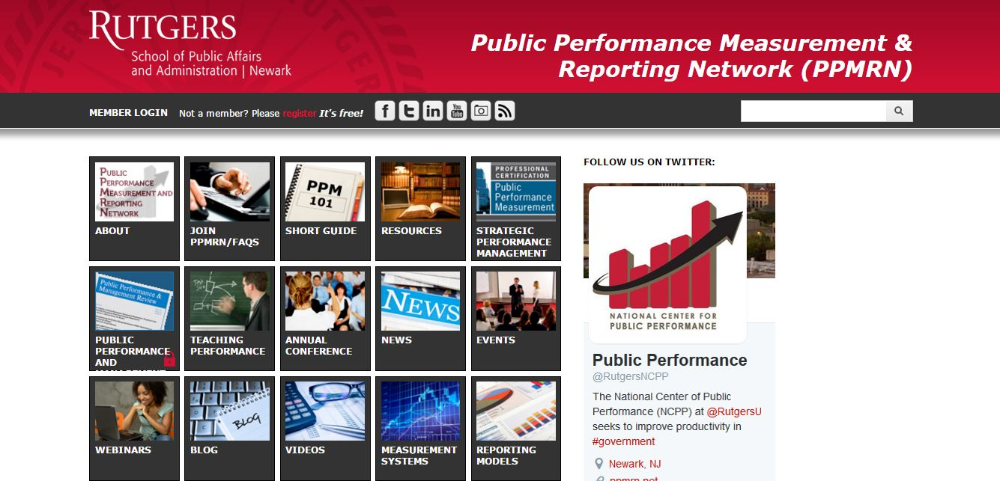
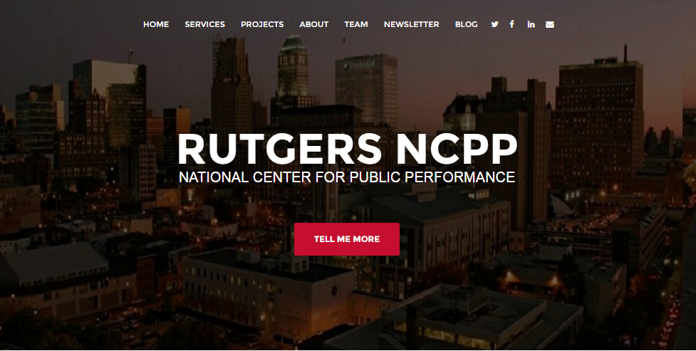
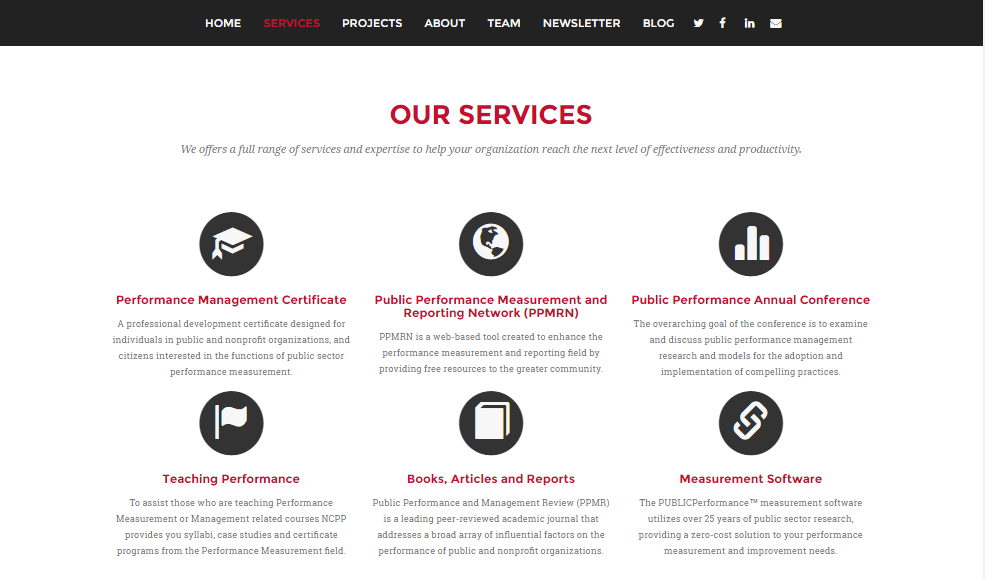
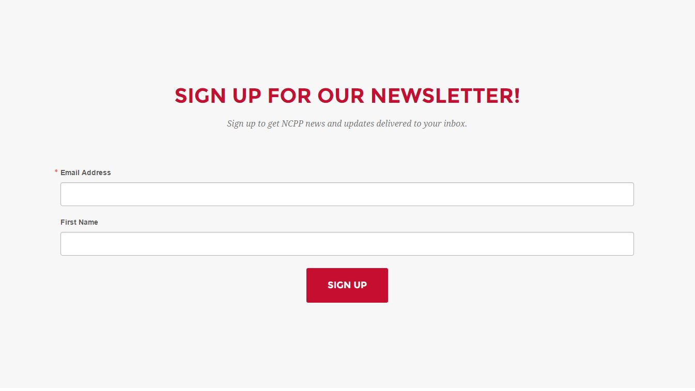

Web Development
Web Development Project
Below is one of hte web development project I conducted.
The National Center for Public Performance (NCPP) at Rutgers University is a research and public service organization devoted to improving productivity in the public sector. The center providing services such as educational certificate, communication network, and annual conference. New educational product and annual conference 2016 are coming, and the center needs better marketing strategies. Comparing with other research centers such as Government Performance Lab which founded by Harvard Kennedy School, NCPP's webpage is outdated and not fancy enough to attract people. Thus, as a project manager of the NCPP, a new version of NCPP's website is designed.
Main Issues
- NCPP's previous website is more focus on one of their project called Public Performance and Measurement Reporting Network(PPMRN) and their affiliations confused the website visitors.
- The previous website design is outdated and the website structure is messy.
- NCPP's services are not clear claimed in the previous website.
- NCPP has resources and network for public managers to connect with, such as social media, academic resources, and annual conference. However, in the previous website, visitors are difficult to engage to the network.

Challenges
A couple of questions I asked before prototyping:
- How to make the website features fashionable but professionally presenting NCPP
- How to feature clearly NCPP's services and products?
- How to distinguish NCPP and its project PPMRN?
- How to make visitors easily engage to NCPP's services and products?
Prototype
After negotiated with the NCPP board members, we designed to refer one page scrolling website template to structure our new website. Because the priority of the new website is to make the information of the website easy to be understand and simple. At the first stage of structuring the new website, we probably more focus on creating a website that consist of basic info of the NCPP, for example, what is NCPP, what are the services and products, and contact info, etc. In addition, one page website feature is not only clear, but also fashionable. Thus, a one page website is proposed.

We conducted research about the main content we should contain on our website, refering some of the research institue such as Harvard Government Lab and Public Management School's websites. After discussion, we determined to put main content such as services, projects, about, team info, and social networking sites such as blog and other social media. Furthermore, newsletter as one important marketing tactics, we designed to prioritize it as well.

Scrolling Navigation Bar
In detail, the Scrolling Navigation Bar consists of 'HOME', 'SERVICES', 'PROJECTS', 'ABOUT', 'TEAM','NEWSLETTER', 'BLOG', and icons of social media and email. This navigation bar is fix to the top of the website, aims to provide convenience for visitor to explore information. In addition, these contents are the most priority content of this website, providing a clear strucure in order to address the structure mess up problem.
When pressing the session tag, the website will scrolling in to the detail part.
Services
Services session generates the main services and products provided by NCPP, which clearly distinguish the affiliation between NCPP and PPMRN. In addition, it is a brief guide line for visitor to understant what are NCPP's functions.
Newsletter
Services session generates the main services and products provided by NCPP, which clearly distinguish the affiliation between NCPP and PPMRN. In addition, it is a brief guide line for visitor to understant what are NCPP's functions.

Since NCPP's email marketing system is supported by Constant Contact, I embeded code on the website for conveniently signing up. This function is to address the user engagement problem.